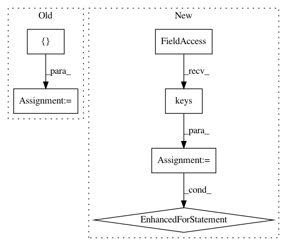

4a5eef64d2a0ab5e1737ffbb345d9e72d2f1adc9,train.py,,,#,56
Before Change
vgg = nn.Sequential(*list(vgg.children())[:31])
network = net.Net(vgg, decoder)
for name in ["enc_1", "enc_2", "enc_3", "enc_4"]:
for param in getattr(network, name).parameters():
param.requires_grad = False
network.train()
network.cuda()
content_tf = train_transform()
After Change
if (i + 1) % args.save_model_interval == 0 or (i + 1) == args.max_iter:
state_dict = net.decoder.state_dict()
for key in state_dict.keys():
state_dict[key] = state_dict[key].to(torch.device("cpu"))
torch.save(state_dict,
"{:s}/decoder_iter_{:d}.pth.tar".format(args.save_dir,
i + 1))
writer.close()
In pattern: SUPERPATTERN
Frequency: 3
Non-data size: 6
Instances
Project Name: naoto0804/pytorch-AdaIN
Commit Name: 4a5eef64d2a0ab5e1737ffbb345d9e72d2f1adc9
Time: 2018-05-16
Author: inoue@hal.t.u-tokyo.ac.jp
File Name: train.py
Class Name:
Method Name:
Project Name: cve-search/cve-search
Commit Name: 10f98f742e47df11d47aa746699a009b6c6cb85b
Time: 2013-04-01
Author: a@foo.be
File Name: search_fulltext.py
Class Name:
Method Name:
Project Name: automl/ParameterImportance
Commit Name: b8fb87ecd382c603f01fa126f1c0ad7ca141e47a
Time: 2018-11-19
Author: shukon@users.noreply.github.com
File Name: pimp/evaluator/local_parameter_importance.py
Class Name: LPI
Method Name: run